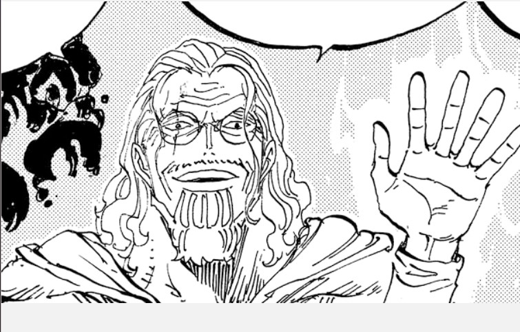
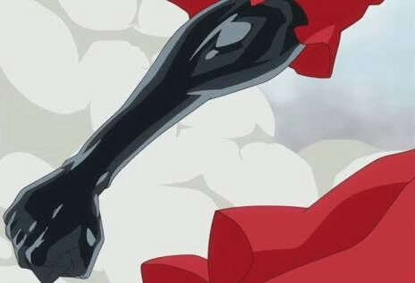
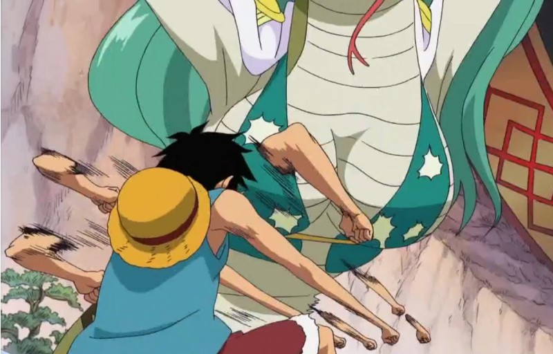
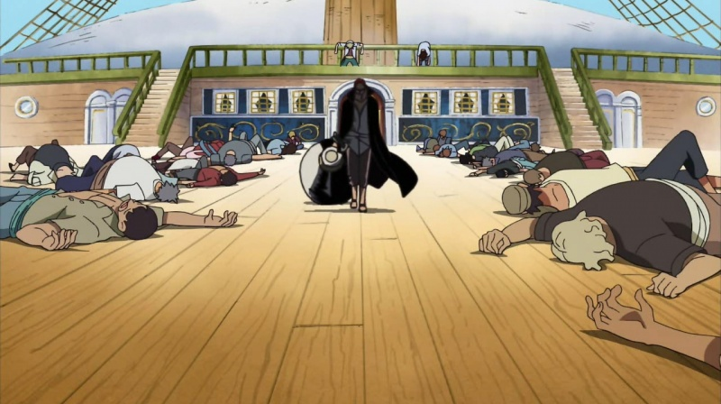

Haki

The term Haki refers to a kind of supernatural power.
It represents the manifestation of one's own will and expresses itself as superior mental power . It lies dormant in every person and can be awakened either through a shock, through hard training, or through 'natural talent'. Only extremely mentally strong people are able to develop their aura in such a way that they can consciously use it and use it as a weapon. The possible uses of Haki are varied and offer users the right tools , especially in the fight against devil fruit users
Armament Haki

Armament Haki is a powerful technique that allows users to create an invisible armor around themselves or their weapons, significantly enhancing both offensive and defensive capabilities.
This form of Haki enables the user to bypass Devil Fruit defenses, making it particularly effective against Logia-type users, and can be used to imbue objects with increased durability and strength.
Observaton Haki

Observation Haki is a form of Haki that allows the user to sense the presence, strength, and intentions of others, even if they are hidden from view or far away.
This ability enables users to predict their opponent's moves, making it invaluable in combat situations and for avoiding danger. While it's primarily used in battle, Observation Haki also has practical applications in everyday situations, such as locating specific individuals in a crowd or sensing impending threats.
Conqueror's Haki

Conqueror's Haki, also known as the Color of the Supreme King, is the rarest and most powerful form of Haki
This ability is innate and cannot be learned, manifesting only in one in several million people who possess the qualities of a king or natural leader.